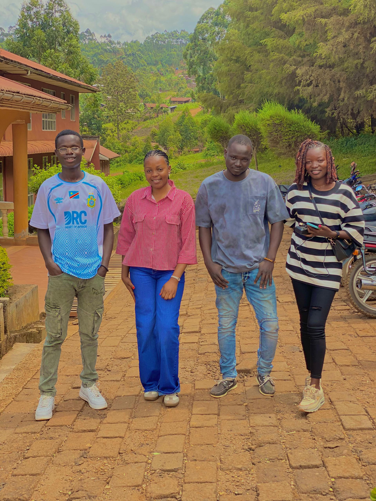
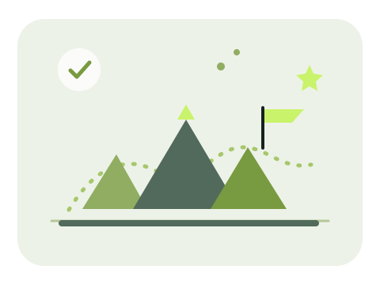

Apprendre
Renforcer mes connaissances en informatique et découvrir de nouveaux outils.
Étudiant · Curieux · Motivé
Étudiant, j'aime apprendre, relever de nouveaux défis et avancer chaque jour vers mes objectifs.
Informatique appliquée à la gestion des entreprises
Découvrir mon profil
Je m'appelle Heritier Junior et je suis étudiant. J'aime découvrir de nouvelles idées, développer mes connaissances et travailler avec sérieux sur les projets qui me sont confiés.
En ce moment, je découvre la création de pages web avec HTML et CSS. Cette page est une première étape pour partager mon parcours et ce que j'apprends.
Ma formation relie l'informatique à la gestion des entreprises. J'aimerais continuer à explorer ces domaines et apprendre à créer des solutions utiles, étape par étape.
Un souvenir avec des amis de la faculté : les rencontres et les échanges font aussi partie de l'expérience étudiante.

ACTUELLEMENT
Établissement : Université de l'Assomption au Congo
Filière ou domaine : Informatique Appliquée à la Gestion des Entreprises
Ce site est un exercice pratique : j'y utilise HTML pour organiser le contenu et CSS pour construire une présentation adaptée aux téléphones comme aux ordinateurs.
Je souhaite aussi découvrir le cloud computing et comprendre comment les services et les données peuvent être accessibles en ligne.
Mon parcours en informatique appliquée à la gestion m'encourage à développer des compétences utiles et à les mettre en pratique.
Renforcer mes connaissances en informatique et découvrir de nouveaux outils.
Mettre en application ce que j'étudie à travers des projets personnels.
Avancer avec curiosité, sérieux et régularité dans mon parcours.
Cette page personnelle est une première réalisation : la faire évoluer me permet de pratiquer, d'organiser mes idées et de partager mon parcours.

Pour échanger au sujet de mon parcours ou de mes projets, tu peux m'écrire par e-mail :
heritierbambu00@email.comRetrouve aussi mes projets sur GitHub :
github.com/heritierjuniorToujours partant pour apprendre et échanger.